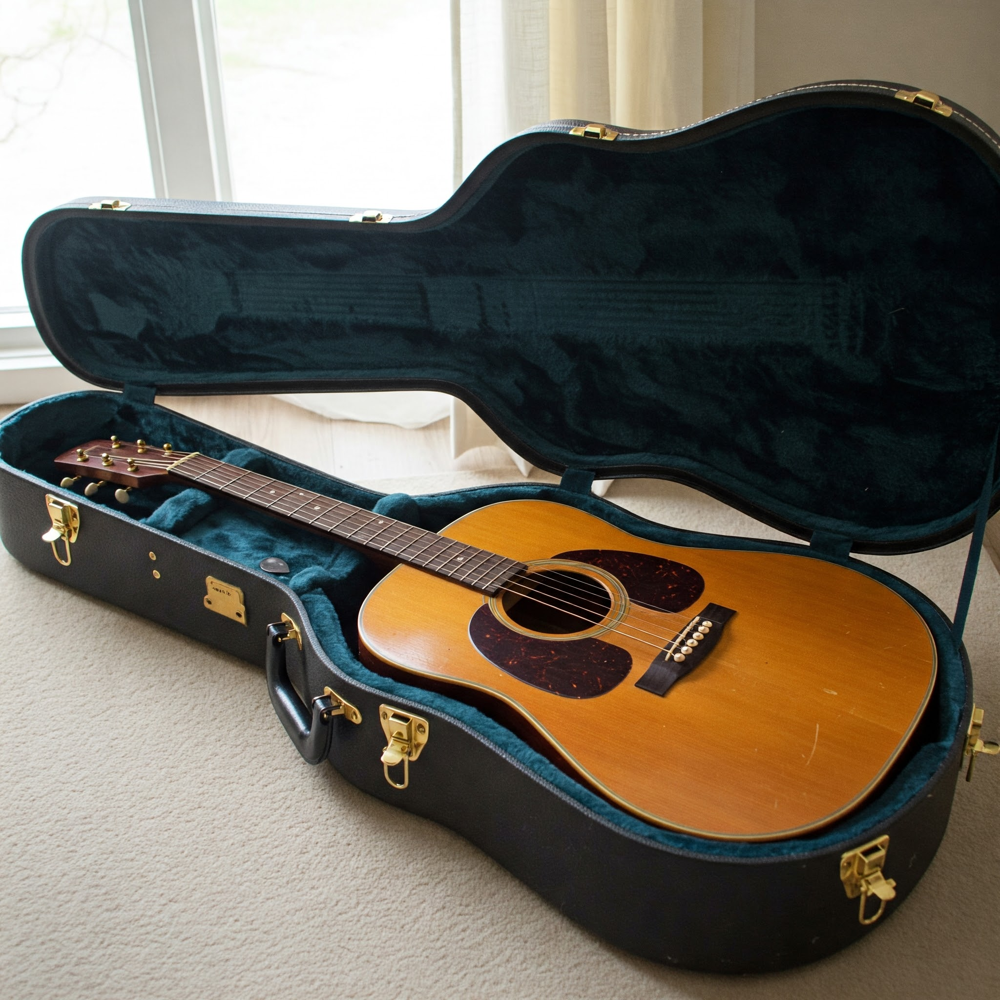

Strike the Right Chords, Right on Time.

At Timely Guitars, we believe every musician deserves an instrument that keeps pace with their creativity. Our handcrafted guitars blend timeless craftsmanship with modern innovation, delivering unparalleled tone, playability, and style—right when you need it.
Why Choose Timely Guitars?
- Precision-Tuned for Perfection: Every guitar is built to resonate with clarity and sustain.
- Sustainably Sourced Woods: Ethically crafted for players who care about quality and the planet.
- Play in the Moment: Designed for seamless inspiration, whether on stage or in the studio.